AR — Argentina
The main impact of a 200 basis-point (2.00 percentage-point) rise in United States interest rates on Argentina is a 0.07% drop in GDP by the tenth quarter — a minimal spillover. Argentina ranks sixth by absolute GDP response among the countries in this run, but the band is "minimal": the peak hit is roughly seven-hundredths of one percent of GDP, and the path actually turns positive from the seventeenth quarter onward, reaching +0.04% above baseline by Q20. This is a small, slow-burning, and ultimately self-reversing effect, not a crisis.
**Demand and trade.** Household consumption (Consumption) tracks the GDP path closely, peaking at −0.03% in Q10 and recovering to +0.02% by Q20. Private investment (Investment) is the hardest-hit demand component, falling 0.17% at its Q8 trough before swinging to +0.09% above baseline by Q20 — the cost-of-capital channel is doing most of the near-term damage. Net exports (the trade balance, since this model does not split imports from exports) move the other way early: +0.01% in Q1, peaking at +0.02% around Q4, then deteriorating to −0.02% by Q18 as the currency appreciation erodes competitiveness. Government spending (Gov Spending) rises modestly, peaking at +0.01% in Q10, a small automatic-stabiliser-style offset. Government debt (Gov Debt) drifts down relative to baseline, troughing at −0.02% in Q15 — a small improvement in the debt path, not a deterioration.
**External / FX.** The real exchange rate (Currency Strength) appreciates sharply, peaking at +0.32% in Q8 — the peso strengthens in real terms as US rates rise. That lines up exactly with the net-exports story: the early NX gain fades and turns negative precisely as the currency appreciation builds, and by Q18 net exports are 0.02% below baseline while the currency has given back most of its gain. The appreciation is the dominant external channel here.
**Labour.** Employment falls gradually, peaking at −0.03% below baseline in Q13, then recovering to +0.01% by Q20. Unemployment rises by 0.01 percentage points at its Q12 peak — a tiny labour-market cost — before falling 0.003 points below baseline by Q20. Real wages are the most persistent labour variable: they rise slightly early (+0.02% around Q6) but then fall steadily, peaking at −0.07% below baseline in Q18 and still −0.06% down at Q20. Workers bear a lasting real-income cost even as employment recovers.
**Prices.** CPI inflation rises 0.02 percentage points in Q1, fades by Q4, and turns negative from Q6, troughing at −0.01 percentage points around Q11 before returning to +0.004 points by Q20. Domestic inflation follows the same shape, peaking at +0.01 points in Q1 and troughing at −0.01 points in Q11. Firms' marginal cost falls 0.04% at its Q10 trough, consistent with the disinflationary demand drag, then recovers to +0.02% above baseline by Q20.
**Financial conditions.** The local policy rate rises 0.02 percentage points initially, then falls to −0.05 points below baseline by Q12 — the local central bank eases into the slowdown. Government 2-year yields fall 0.04 points at their Q9 trough before rising 0.03 points above baseline by Q20. The 5-year yield dips 0.01 points early, then climbs to +0.02 points by Q19. The 10-year yield stays mildly positive throughout, ending +0.01 points. Bond prices fall 0.14% at their Q8 trough, then swing to +0.13% above baseline by Q12 — a striking reversal. Equity prices are the largest single response in the whole table: −0.57% at the Q8 trough, recovering to +0.04% by Q20. Tobin's Q (the value of installed capital) falls 0.12% at its Q8 trough and ends +0.06% above baseline. House prices decline steadily, peaking at −0.06% below baseline in Q14 and still −0.03% down at Q20 — the most persistently negative financial variable. Bank credit contracts only marginally, peaking at −0.01% below baseline in Q17, and lending spreads widen by just 0.002 percentage points at their Q17 peak. Financial conditions tighten, but the credit channel is barely engaged.
**Sectoral and capital.** Manufacturing GDP is hit hardest of the production sectors, falling 0.10% at its Q8 trough before recovering to +0.03% by Q20. Services GDP falls 0.04% at its Q10 trough and ends +0.02% above baseline. The capital stock erodes very slowly, peaking at −0.01% below baseline in Q14 and still −0.01% down at Q20 — investment weakness leaves a small permanent scar on productive capacity.
**Timing.** The GDP hit is largest in Q10 at −0.07%, and it has fully faded by Q16, turning positive from Q17. The equity and investment troughs come earlier, at Q8. The disinflation trough is around Q11. Nothing here is large; the whole episode is a modest, delayed, and largely self-correcting drag.
**Close.** These are model impulse responses to a 200 basis-point US rate rise, relative to a no-shock baseline — not forecasts, and not trading advice. They describe how this model's Argentina block behaves under a US tightening shock, nothing more.
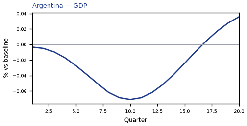
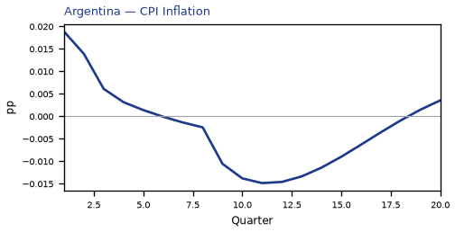
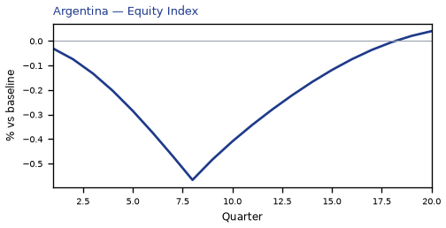
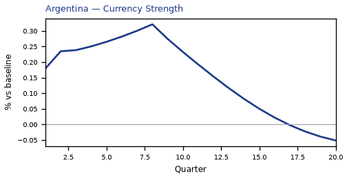
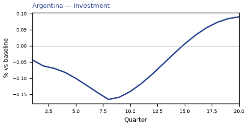
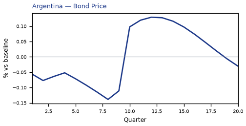
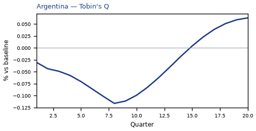
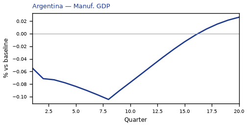
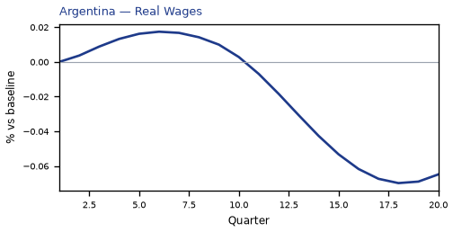
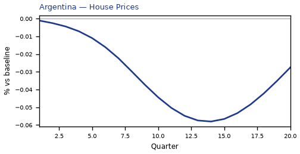

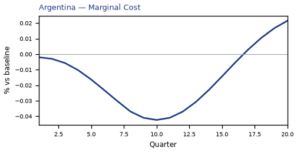
source=live · global_macro_v5 · contract v6 · Q1–Q20 JSON · not financial advice